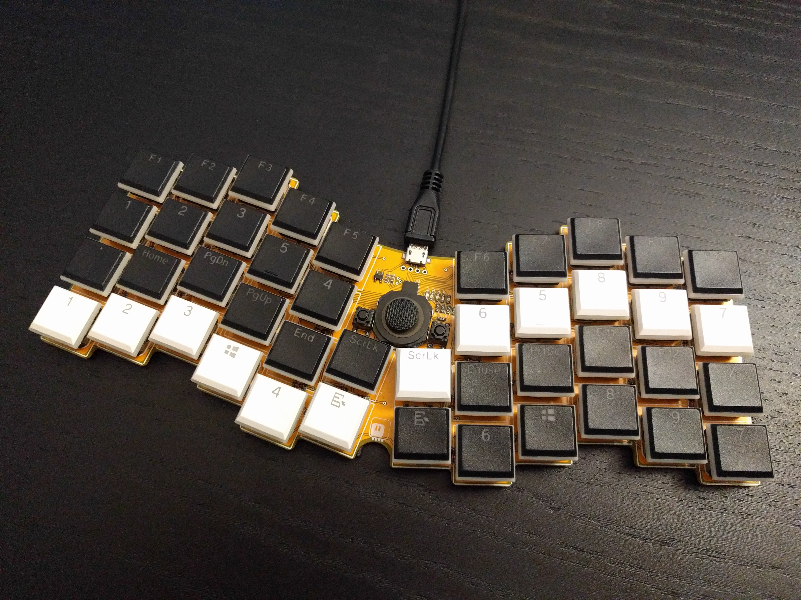
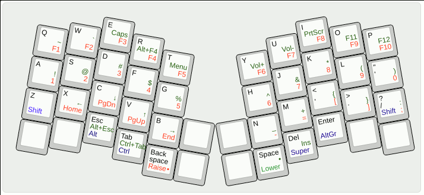

Small Improvements¶
Published on 2021-04-01 in Flatreus Keyboard.
I made some small improvements to the Flatreus recently. I replaced the tact switches I originally used for the mouse buttons with actual switches for a mouse. They require much less actuation force, and are much more clicky. They feel exactly right, even though they are a bit harder to reach due to being lower.
As you can see, I’m using leftover keycaps with it now. They fit surprisingly well my new layout:
It was originally designed for a smaller keyboard, so 8 keys are unused, but they were hard to reach anyways.